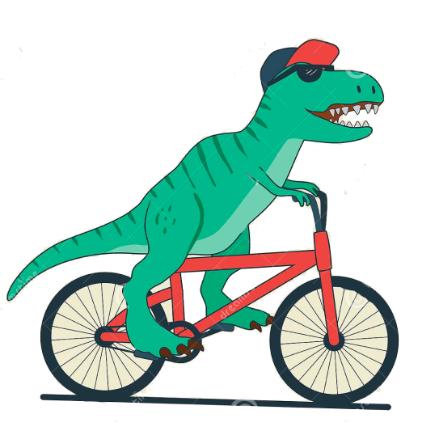

Мы, мастера веломастерской «Велозар», как раз те самые счастливые люди, которые смогли превратить свое увлечение и хобби в профессию. Мы сами любим кататься и хотим чтобы Ваш двухколесный друг приносил Вам только радость и удовольствие от езды.
В нашей мастерской можно выполнить комплексное техническое обслуживание велосипеда, ремонт и настройку всех его узлов, шиномонтажные работы. Вовремя проведенное ТО велосипеда помогает избежать многих проблем и дорогого ремонта. Все работы выполняем качественно и с душой.
Приехав к нам однажды, многие наши клиенты становятся постоянными, а часть из них даже друзьями. А также в нашей мастерской можно отремонтировать электросамокат и электровелосипед.
_________________________
_________________________
_________________________
У нас вы можете взять напрокат хорошо обслуженные и настроенные велосипеды. Как раз мы находимся в прекрасном парке!